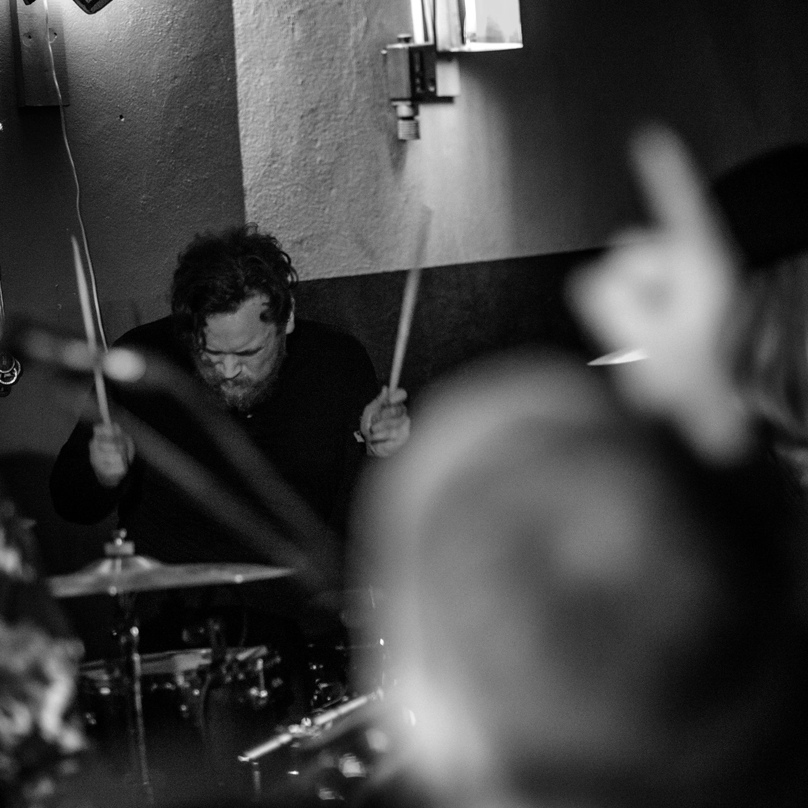

Front-end Developer
I have studied 3D design and Game Design which gives me experience in 3DSMAX, Blender, Substance Painter, Marvelous Designer and Unreal Engine.
I'm currently halfway through a two-year vocational course at Noroff where i'm learning industry relevant skills in JavaScript, HTML and CSS.
I trained as a chef in my teens which have given me skills and confidence in the kitchen. If there is a recipe of it, i can probably make it. I post my creations at my foodblog here
Game Designer, Web Developer, Musician & Chef Based out of Sandejord
I am a 33 year old man originating from Kirkenes in the north-eastern part of Norway. I spent my first living years in Tromsø until we moved to Kirkenes. I'm currently situated in Sandejord, where i live with my Girlfriend. In my late teens I trained as a chef, but unfortunately I did not pursue that path. After that I worked different jobs untill I began studying 3D design and Game Design. After that I started the Front-end course I'm now halfway through.
My most recent projects
This project set out to test our ability to design a webpage that was centered on sales and commerce. The goal of the page is to sell a product to the customer and make this process as easy as possible.
For the online version of this project you can click here!
For the GitHub repo and a detailed readme file, click here!
This project set out to create a blog of my choice, so i decided upon a food blog. Here i utilize the knowledge that i have learned throughout the first year to create a webpage.
For the online version of this project you can click here!
For the GitHub repo and a detailed readme file, click here!
This project set out to make a website for a fictive science museum. We were to create the design for the webpage from scratch and were only limited to the copy of the webpage which was provided in our brief from the tutors. The goal was to make a site that invited curiosity with the users and that catered to kids and teenagers as well as adults.
For the online version of this project you can click here!
For the GitHub repo and a detailed readme file, click here!